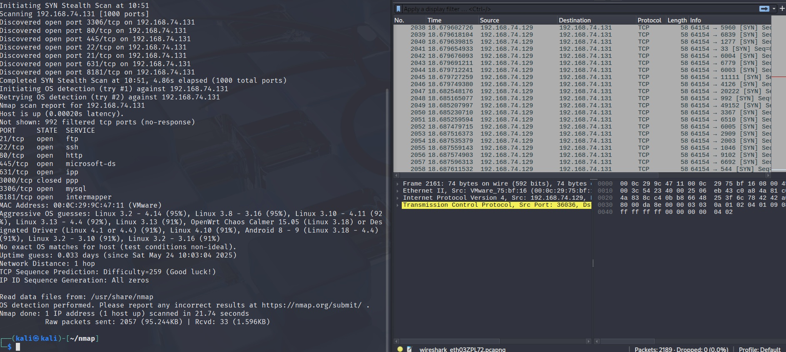
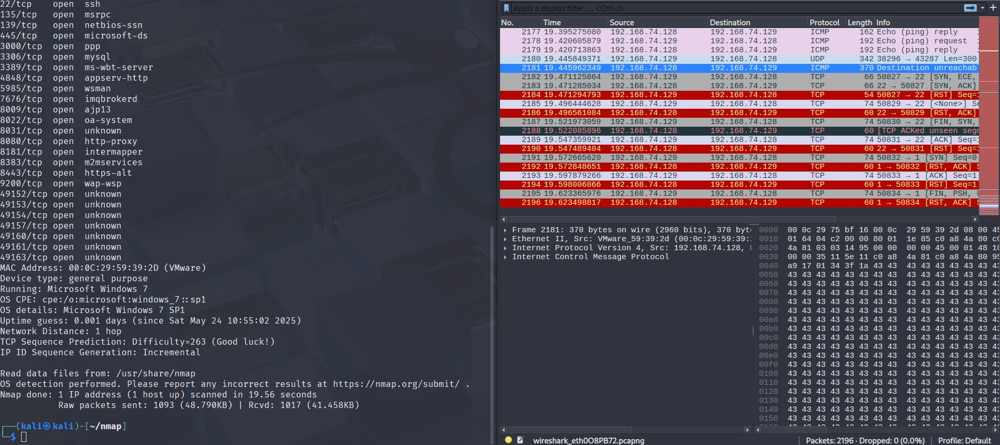
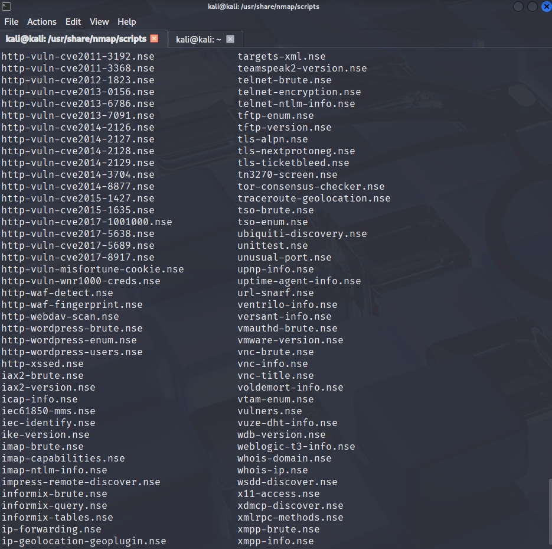
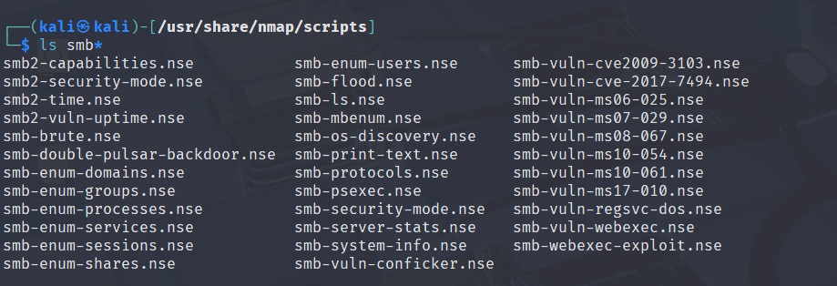
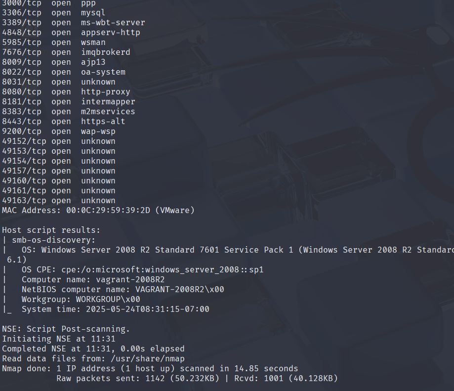
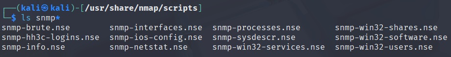
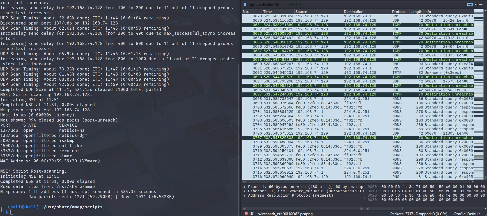

Para el escaneo de sistema operativo usamos -O, con este comando escaneamos los puertos del host, nos dice cual esta abierto y qué servicio podría correr (basándose en el archivo de nmap) como se puede observa en la siguiente captura
Observemos qué información nos da en nuestra máquina windows
Ahí podemos ver que es un windows 7, los puertos y como dato extra, si nos fijamos al final nos dice de dónde saca el archivo donde tiene escrito los servicios que corren por default en puertos, Read data files from: /usr/share/nmap.
nota, en linux nos dio varias posibilidades, en windows nos dijo que era 1, se acercó pero no acertó, es un 2k8 R2
nmap ya trae scripts por default, se encuentran en: /usr/share/nmap/scripts navegamos hacia esa carpeta y ejecutamos: ls para ver todos los scripts que tenemos a nuestro uso, recomiendo abrirlo en una terminal diferente y tenerla en segundo plano como referencia cuando se necesite
para usarlo, debemos ejecutar un comando que queramos y añadirle --script=nombreDeScript
El protocolo SMB es un protocolo que se lleva usando desde windows 2000 aprox, es un sistema que ya nace con fallos, y con cada actualizacion van surgiendo más, este protocolo sirve para compartir archivos entre equipos como carpetas compartidas, usuarios, etc, y va a correr en el puerto 445, podemos sacar información de ahí.
navegamos de nuevo a /usr/share/nmap/scripts y hacemos un ls smb* para listar todos los scripts que gasten smb
probemos un script como el de smb-os-discovery en nuestra máquina windows para comprobar si nos da el sistema operativo correcto en comparación al método anterior: sudo nmap -v -sS --script=smb-os-discovery 192.168.x.x
Ahí se puede ver que en efecto, el sistema es un Windows Server 2008 R2 Standard 7601 Pack 1 a diferencia del método anterior que se acercó ya que dijo que era un Windows 7 pero aquí podemos ver un poco mas a fondo, en detalle y sobretodo con mucha precisión
Nota: no tienen por qué funcionar siempre, es posible que mediante el protocolo SMB estén bien protegidas y no podamos obtener la información
El protocolo SNMP es un protocolo de red que nos sirve para gestionar/obtener datos de dispositivos de red como routers o switchs, como de servidores. Este protocolo corre en el puerto 161
Usemos nuevamente scripts pero esta vez busquemos scripts para SNMP
El puerto SNMP en la mayoría de ocasiones está mal configurado en servidores y nos permite obtener mucha información, hagamos un ejemplo
sudo nmap -v -sU --script=snmp-win32-software 192.168.x.x
Este tomó mucho tiempo, 500 segundos como se puede ver en la imágen, eso es por que escanee todo, a veces es mejor escanear un puerto concreto con -p 161 o si queremos varios -p 161,21 o si queremos un rango con -p 161-165